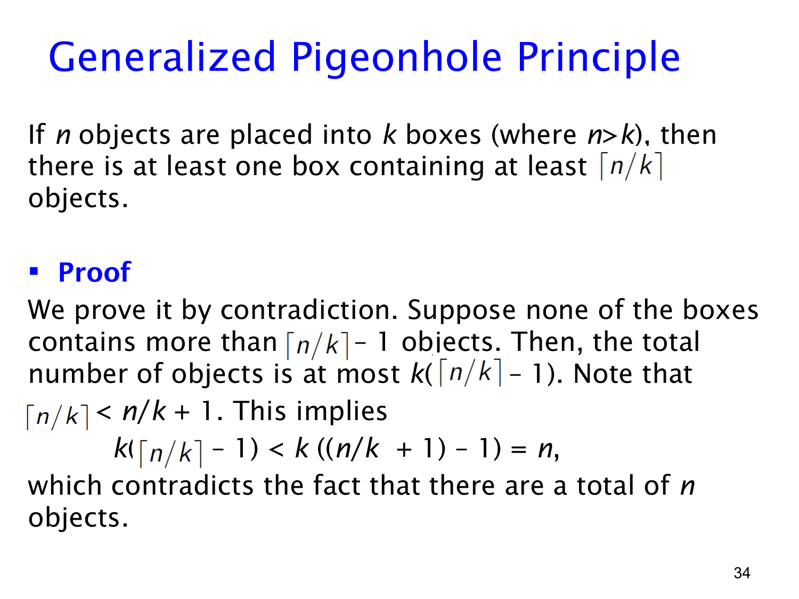

课件第 34 页讲解原文
查看这一页课件

广义鸽巢原理：至少有一个盒子达到平均数的向上取整
普通鸽巢原理保证某个盒子里至少有两个对象。Generalized Pigeonhole Principle（广义鸽巢原理）进一步给出数量下界：把 n 个对象放进 k 个盒子，至少有一个盒子包含不少于
⌈kn⌉
个对象。课件讨论 n>k 的情况，盒子数 k 必须为正整数。
符号 ⌈x⌉ 表示向上取整，即不小于 x 的最小整数。例如 ⌈10/3⌉=4，而 ⌈12/3⌉=4，整数不会再额外加 1。
直观上，n/k 是每个盒子的平均对象数，至少有一个盒子不能低于这个平均数；对象数量又必须是整数，因此得到向上取整。
课件用反证法。令 q=⌈n/k⌉。假设没有任何盒子含至少 q 个对象，那么每个盒子至多有 q−1 个，总数至多为 k(q−1)。
根据向上取整的定义，q−1<n/k。两边乘以正数 k：
k(q−1)<n.
这意味着所有盒子加起来装不下已知的 n 个对象，产生矛盾，所以至少有一个盒子含 q 个或更多对象。
例如把 10 个对象放进 3 个盒子：如果每个最多 3 个，只能放 9 个，因此有一个至少 4 个。这里保证的是“存在一个盒子至少有 4 个”，并不是说每个盒子都有 4 个，也不一定恰好是 4 个。